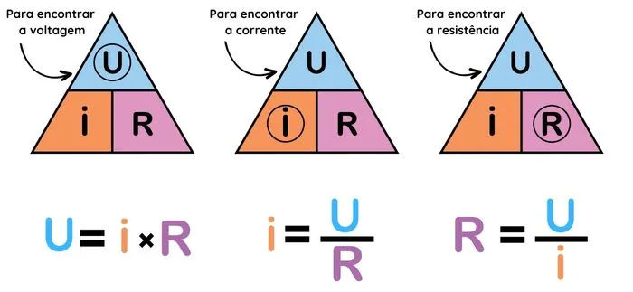
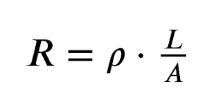
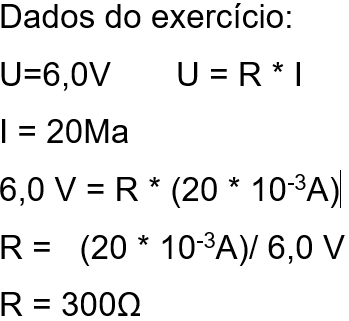

A primeira Lei de Ohm define que a corrente elétrica em um condutor é diretamente proporcional à tensão aplicada e inversamente proporcional à resistência.
Fórmula da Primeira Lei de Ohm
A equação matemática é:

Fonte: Brasil Escola
Unidades de Medida
Grandeza
Unidade
Símbolo
Tensão elétrica
Volt
V
Resistência elétrica
Ohm
Ω
Corrente elétrica
Ampère
A
3.2 Segunda Lei de Ohm
A segunda Lei de Ohm determina que a resistência elétrica de um material depende do seu comprimento, área da seção transversal e da sua resistividade específica.
Fórmula da Segunda Lei de Ohm
A equação matemática é:

Fonte: Embarcados
Unidades de Medida
Grandeza
Unidade
Símbolo
Resistência elétrica
Ohms
Ω
Resistividade do material
Ω·m
ρ
Comprimento do condutor
Metro
L
Área da seção transversal do condutor
Metro quadrado
A
R = Resistência elétrica (Ohms - Ω)
ρ = Resistividade do material (Ω·m)
L = Comprimento do condutor (m)
A = Área da seção transversal do condutor (m²)
3.3 Aplicações da Lei de Ohm no Mundo Real
A Lei de Ohm tem diversas aplicações práticas, sendo essencial para projetar e analisar circuitos elétricos e eletrônicos.
Eletrônicos e Dispositivos Elétricos: Dimensionamento de resistores, funcionamento de LEDs, rádios, TVs e computadores.
Instalações Elétricas: Projetos de fiação para evitar sobrecargas e curtos-circuitos.
Sistemas de Iluminação: Cálculo da corrente e tensão para lâmpadas incandescentes, fluorescentes e LEDs.
Carregadores de Celular e Fontes de Energia: Controle da voltagem e corrente para evitar danos às baterias.
Veículos e Automação: Aplicação em faróis, baterias e sistemas de injeção eletrônica.
Indústria e Engenharia: Utilização em motores elétricos, transformadores e redes de distribuição de energia.
3.4 Exemplos Práticos
(VUNESP) Os valores nominais de uma lâmpada incandescente, usada em uma lanterna, são: 6,0 V; 20 mA. Isso significa que a resistência elétrica do seu filamento é de:
a) 150 Ω, sempre, com a lâmpada acesa ou apagada.
b) 300 Ω, sempre, com a lâmpada acesa ou apagada.
c) 300 Ω com a lâmpada acesa e tem um valor bem maior quando apagada.
d) 300 Ω com a lâmpada acesa e tem um valor bem menor quando apagada.
e) 600 Ω com a lâmpada acesa e tem um valor bem maior quando apagada.

Uma lâmpada incandescente é atravessada por uma corrente de 1,1 A. Sendo a resistência elétrica da lâmpada igual a 100 Ω, qual é o valor da d.d.p. entre seus terminais?